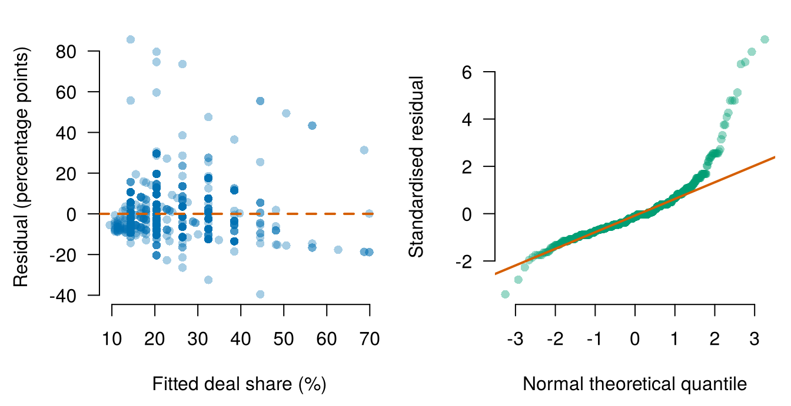

sharks <- read.csv("data/shark_tank_teaching.csv", stringsAsFactors = FALSE)
deals <- subset(sharks, deal_on_show == 1) # pitches with a deal on air
c(pitches = nrow(sharks), deals = nrow(deals))pitches deals
1441 882 By the end of Tutorial 1, you can
Tutorials are exam preparation sessions. The tasks below are exam-style questions. You take the exam in TestVision, and R is available. Try each task yourself before you look at the solution. You may use AI for this, following Attempt, Ask, Verify, Explain.
Complete the after-class practice from Lectures 1 and 2. Lecture 3 is on the day before this tutorial: read its lecture material, and do its practice after the tutorial. Keep the sections for Lectures 1 to 3 of the QM Intermediate Code Sheet open while you work. If the notation slows you down, review Mathematics Refresher: straight lines, slopes, and intercepts and powers, roots, and squared deviations.
Write from memory:
A complete written answer does five things. It names the sample, shows the calculation, and reports values with units. It interprets the values in context. And it states one important limit of the model or of the data. More practice for home is in the final section of this page, Extra practice for home.
All six tasks follow one founder question through the steps of Lectures 1 to 3: when founders offer more equity, how much equity do they end up giving in the deal? Before a pitch, every founder decides which share of the company to offer. On Shark Tank the sharks often accept the amount of money but ask for a larger share in return. A founder who knows how the final share is related to the opening offer can choose the offer with the likely final share in mind, and can decide in advance how far to go in the negotiation.
All tasks use the Shark Tank teaching file. The code below loads the data and keeps the 882 pitches that ended in a deal on air (deals). Two variables answer the question, both in percent of the company: the equity that the founder offered at the start of the pitch (equity_offered_pct) and the equity that the founder gave in the deal (deal_equity_pct). A difference between two shares is measured in percentage points. Review percent and percentage points if you need to. In eight of the deals the sharks invested without taking a share of the company, so the file records a deal share of 0%. These deals stay in the sample, because 0% is the equity that these founders gave. The last line prints the number of pitches and the number of deals.
sharks <- read.csv("data/shark_tank_teaching.csv", stringsAsFactors = FALSE)
deals <- subset(sharks, deal_on_show == 1) # pitches with a deal on air
c(pitches = nrow(sharks), deals = nrow(deals))pitches deals
1441 882 Fit the simple regression of the equity given in the deal (deal_equity_pct) on the equity offered by the founder (equity_offered_pct), with all deals. Then report:
Use (copy and paste) this structure:
R code:
Sample:
Fitted equation:
Interpretation of the slope:
Size of the slope for one standard deviation more equity offered:
Limit of the intercept's meaning:The code fits the model and prints its two coefficients. It then prints the mean and the standard deviation of the deal share, the benchmarks for the size of the slope, the standard deviation of the offer, and the smallest and largest offer.
equity_model <- lm(deal_equity_pct ~ equity_offered_pct, data = deals)
coef(equity_model) (Intercept) equity_offered_pct
8.315024 1.207341 c(mean_deal = mean(deals$deal_equity_pct), # benchmarks, in %
sd_deal = sd(deals$deal_equity_pct),
sd_offer = sd(deals$equity_offered_pct))mean_deal sd_deal sd_offer
23.345329 14.878996 7.674459 range(deals$equity_offered_pct) # smallest and largest offer[1] 1 51Filled-in structure:
Produce the residual-versus-fitted plot and the normal Q-Q plot for the Task 1 model of the equity given in the deal on the equity offered.
Use (copy and paste) this structure:
R code:
First problem, and what in the plots shows it:
Second problem, and what in the plots shows it:
Number with a standardised residual beyond ±3:
Number with a Cook's distance above 4/n:
What most deals with a standardised residual above 3 have in common:
Offers and deal shares at a multiple of 5%:
How the data were generated, and why the bunching is not a violation:
Assumption the plots cannot assess, and what would assess it:The code draws the two plots side by side. It then prints
equity_model <- lm(deal_equity_pct ~ equity_offered_pct, data = deals)
old_par <- par(no.readonly = TRUE)
par(mfrow = c(1, 2), mar = c(4.5, 4.4, 1.3, 0.7), las = 1)
plot(fitted(equity_model), residuals(equity_model),
pch = 16, col = grDevices::adjustcolor("#0072B2", alpha.f = 0.35),
bty = "n", xlab = "Fitted deal share (%)",
ylab = "Residual (percentage points)")
abline(h = 0, lty = 2, lwd = 2, col = "#D55E00")
qqnorm(rstandard(equity_model), pch = 16,
col = grDevices::adjustcolor("#009E73", alpha.f = 0.40),
bty = "n", main = "", xlab = "Normal theoretical quantile",
ylab = "Standardised residual")
qqline(rstandard(equity_model), col = "#D55E00", lwd = 2)
par(old_par)
offer_group <- cut(deals$equity_offered_pct, c(0, 4.99, 5, 10, 20, 100),
labels = c("below 5", "exactly 5", "5 to 10", "10 to 20",
"above 20"))
round(tapply(residuals(equity_model), offer_group, sd), 1) # spread per group below 5 exactly 5 5 to 10 10 to 20 above 20
3.1 10.6 11.0 11.3 18.0 rs <- rstandard(equity_model)
c(big_rstandard = sum(abs(rs) > 3),
above_3 = sum(rs > 3),
above_3_whole_company = sum(rs > 3 & deals$deal_equity_pct == 100),
cooks_flagged = sum(cooks.distance(equity_model) > 4 / nobs(equity_model))) big_rstandard above_3 above_3_whole_company
15 14 8
cooks_flagged
34 c(offer_multiple_of_5 = sum(deals$equity_offered_pct %% 5 == 0),
deal_multiple_of_5 = sum(deals$deal_equity_pct %% 5 == 0))offer_multiple_of_5 deal_multiple_of_5
745 686 
Filled-in structure:
You may also notice that the 42 deals with an offer below 5% lie mostly below the line. Their average residual is about \(-5.6\) percentage points, so the straight line overstates the deal share for the smallest offers.
Use the coefficient table and the 95% confidence intervals of the Task 1 model of the equity given in the deal on the equity offered.
Use (copy and paste) this structure:
R code:
Test, hypotheses:
Test, test statistic:
Test, critical value and rejection region:
Test, observed value:
Test, conclusion:
Interval, formula:
Interval, given values:
Interval, calculations:
Interval, lower and upper bound:
Interval, comparison with the output:
Interval interpretation:
Slope of 1, inside the interval or not:
Slope of 1, observed test statistic:
Slope of 1, conclusion in business terms:
Robust standard errors, yes or no, and why:The code prints the coefficient table, the 95% confidence intervals, the critical value, and the t statistic for a slope of 1.
equity_model <- lm(deal_equity_pct ~ equity_offered_pct, data = deals)
coef_table <- summary(equity_model)$coefficients
coef_table Estimate Std. Error t value Pr(>|t|)
(Intercept) 8.315024 0.7477311 11.12034 5.684681e-27
equity_offered_pct 1.207341 0.0511365 23.61017 7.368475e-96confint(equity_model) 2.5 % 97.5 %
(Intercept) 6.847480 9.782569
equity_offered_pct 1.106978 1.307705qt(0.975, df = 882 - 2)[1] 1.962663(coef_table["equity_offered_pct", "Estimate"] - 1) /
coef_table["equity_offered_pct", "Std. Error"] # t statistic for a slope of 1[1] 4.054665Filled-in structure:
qt(0.975, 880) = 1.963. Reject \(H_0\) if \(|t_{obs}|\ge1.963\).Use the Task 1 model of the equity given in the deal on the equity offered.
Use (copy and paste) this structure:
R code:
SST, SSE, and SSR:
R-squared by hand:
R-squared in the output:
F and t squared:
The two models that the overall F-test compares:
Concluding sentence:The code computes the three sums of squares from the observed and the fitted values, and then prints \(R^2\) by hand, \(R^2\) from the output, the overall F statistic, and the squared t statistic of the slope.
equity_model <- lm(deal_equity_pct ~ equity_offered_pct, data = deals)
y <- deals$deal_equity_pct
yhat <- fitted(equity_model)
SST <- sum((y - mean(y))^2)
SSE <- sum((y - yhat)^2)
SSR <- sum((yhat - mean(y))^2)
c(SST = SST, SSE = SSE, SSR = SSR) SST SSE SSR
195039.77 119403.23 75636.54 c(R2_manual = 1 - SSE / SST,
R2_summary = summary(equity_model)$r.squared,
F_summary = unname(summary(equity_model)$fstatistic["value"]),
t_squared = summary(equity_model)$coefficients["equity_offered_pct", "t value"]^2) R2_manual R2_summary F_summary t_squared
0.3878006 0.3878006 557.4401201 557.4401201 Filled-in structure:
Task 2 flagged 34 deals with a Cook’s distance above \(4/n\). Before a founder relies on the Task 1 line, check how much these deals move it. Fit the Task 1 model again without the flagged deals. The rule, a Cook’s distance above \(4/n\), is fixed before you look at the result.
Use (copy and paste) this structure:
R code:
Slope and intercept, all deals:
Slope and intercept, without the flagged deals:
Change of the slope:
Fitted deal share for an offer of 10%, both fits:
Rule for flagged observations, and the fit to report:
Advice in two sentences:The code marks the flagged deals and fits the model without them. It then prints
equity_model <- lm(deal_equity_pct ~ equity_offered_pct, data = deals)
flagged <- cooks.distance(equity_model) > 4 / nobs(equity_model)
equity_model_kept <- lm(deal_equity_pct ~ equity_offered_pct,
data = deals[!flagged, ])
rbind(all_deals = coef(equity_model), without_flagged = coef(equity_model_kept)) (Intercept) equity_offered_pct
all_deals 8.315024 1.207341
without_flagged 7.720026 1.193338100 * (coef(equity_model_kept)[2] / coef(equity_model)[2] - 1) # change in %equity_offered_pct
-1.159826 new_offer <- data.frame(equity_offered_pct = 10)
c(all_deals = unname(predict(equity_model, newdata = new_offer)),
without_flagged = unname(predict(equity_model_kept, newdata = new_offer))) all_deals without_flagged
20.38844 19.65341 sigma(equity_model) # residual standard error, in percentage points[1] 11.64841Filled-in structure:
Tom prepares a pitch. He gave the output of the Task 1 model of the equity given in the deal on the equity offered to an AI assistant. Here is the output:
Outcome: equity given in the deal (%), 882 deals Estimate Std. Error p-value
Equity offered (%) 1.207 0.051 <0.001
Intercept 8.315 0.748 <0.001
R-squared: 0.388He asked: “How good is this model?” The AI answered:
“Good model. The equity offered predicts the deal share correctly for about 39% of the deals, because \(R^2\) is 0.388. A founder who offers one percentage point more of the company gives, on average, about 1.2 percentage points more in the deal. And the p-value of the slope is below 0.001, which proves that the assumptions of the model hold.”
Use (copy and paste) this structure:
First error:
Second error:
Correct sentence about the R-squared:
What the small p-value does show:
A result from Task 2 to know before trusting the p-value:The code prints the share of the 882 deals whose residual is at most one percentage point away from zero, that is, whose deal share lies within one percentage point of the fitted value.
equity_model <- lm(deal_equity_pct ~ equity_offered_pct, data = deals)
mean(abs(residuals(equity_model)) <= 1) # share within 1 point of the fitted value[1] 0.1564626Filled-in structure:
The second sentence of the AI answer is correct as a description of the 882 deals. It matches the interpretation of the slope in Task 1.
Do the sharks pay the amount that a founder asks for? Use all 882 deals (deals). Regress the amount agreed in the deal on the amount that the founder asked for, both in thousands of dollars. The code below keeps the deals and converts both amounts from dollars to thousands of dollars.
deals <- subset(sharks, deal_on_show == 1)
deals$ask_1k <- deals$ask_amount_usd / 1000 # amount asked, in $1,000s
deals$deal_1k <- deals$deal_amount_usd / 1000 # amount agreed, in $1,000samount_model <- lm(deal_1k ~ ask_1k, data = deals)
old_par <- par(no.readonly = TRUE)
par(mfrow = c(1, 3), mar = c(4.5, 4.4, 1.3, 0.7), las = 1)
plot(deals$ask_1k, deals$deal_1k, pch = 16,
col = grDevices::adjustcolor("#0072B2", alpha.f = 0.35), bty = "n",
xlab = "Amount asked ($1,000s)", ylab = "Amount agreed ($1,000s)")
abline(amount_model, col = "#D55E00", lwd = 2)
plot(fitted(amount_model), residuals(amount_model), pch = 16,
col = grDevices::adjustcolor("#0072B2", alpha.f = 0.35), bty = "n",
xlab = "Fitted amount agreed ($1,000s)", ylab = "Residual ($1,000s)")
abline(h = 0, lty = 2, lwd = 2, col = "#D55E00")
qqnorm(rstandard(amount_model), pch = 16,
col = grDevices::adjustcolor("#009E73", alpha.f = 0.40), bty = "n",
main = "", xlab = "Normal theoretical quantile",
ylab = "Standardised residual")
qqline(rstandard(amount_model), col = "#D55E00", lwd = 2)
par(old_par)
summary(amount_model)$coefficients Estimate Std. Error t value Pr(>|t|)
(Intercept) 27.57097 7.24074969 3.80775 1.499641e-04
ask_1k 1.00851 0.01820567 55.39538 4.161677e-289confint(amount_model) 2.5 % 97.5 %
(Intercept) 13.3598133 41.782122
ask_1k 0.9727782 1.044241c(r_squared = summary(amount_model)$r.squared,
F = unname(summary(amount_model)$fstatistic["value"])) r_squared F
0.7771389 3068.6477368 # deals that paid exactly, more than, and less than the amount asked
c(same = sum(deals$deal_1k == deals$ask_1k),
more = sum(deals$deal_1k > deals$ask_1k),
less = sum(deals$deal_1k < deals$ask_1k))same more less
727 138 17 ![Three panels. Left: amount agreed against amount asked, both from 10 to 5,000 thousand dollars. Most points lie on the fitted line, which runs close to the line where agreed equals asked, and a group of points lies above it, a few up to about 3,000 thousand dollars at asks below 500. Middle: residuals against fitted values. A dense row of points lies just below zero, with a few residuals up to about 2,800 above zero at small fitted values. Right: normal Q-Q plot that is flat in the middle and rises steeply at the right end, to a standardised residual of about 17.](t01-exam-prep_files/figure-html/fig-iep01-practice-amounts-1.png)
The code fits the model and draws the scatterplot with the fitted line, the residual plot, and the normal Q-Q plot. It then prints the coefficient table, the 95% intervals, \(R^2\) and the overall F statistic, and counts how many deals paid exactly, more than, or less than the amount asked.
Complete from memory:
Two sentences about your own venture
Think of your own venture, or any business you know well. Imagine the one simple regression you would show an investor (revenue on customers, orders on advertising spending). Write two sentences. First, name the number from this tutorial that you would put in the headline (slope, interval, or \(R^2\)), and say why. Second, name the limit from Task 2 or Task 4 that you would state openly next to that number. There is no wrong answer.
Take a student venture that sells boxes of prepared meals on campus. “Headline: the slope with its 95% interval. Each extra €100 of advertising is associated with about 12 to 19 more orders. An investor wants to know how many orders the money brings, and the interval shows how uncertain the number is. Limit: the funnel shape in my residual plot shows that orders vary more in busy weeks. So the interval depends on an assumption that my own residual plot puts in doubt.”
You can discuss this task, and any other task in this tutorial, with Tilly for QM Intermediate, the course AI assistant: paste your two sentences and ask it to act as an investor who doubts your numbers.
For extra exercises on the lectures of this tutorial, with worked solutions, ask Tilly for QM Intermediate, the course AI assistant. For example: “Give me an extra exercise for Intermediate Tutorial 1. Show the solution only after I send my answer.”
These tasks practise the content of Lectures 1 to 3 at home. Task 7 returns to the equity model of Task 1. Tasks 8 to 10 focus on a question that every regression answer must address: is the estimated association large or small in business terms? Tasks 7 and 8 use the Shark Tank file. Tasks 9 and 10 use invented examples.
Use the Task 1 model of the equity given in the deal on the equity offered. A founder plans to offer 10% of the company.
Use (copy and paste) this structure:
R code:
Fitted deal share:
Inside the range of the data, and why it matters:
Residual:
Meaning of the sign:The code prints the fitted deal share for an offer of 10% and the residual of a deal at 30%, both in percent of the company.
equity_model <- lm(deal_equity_pct ~ equity_offered_pct, data = deals)
fitted_10 <- unname(predict(equity_model,
newdata = data.frame(equity_offered_pct = 10)))
c(fitted = fitted_10, residual = 30 - fitted_10) fitted residual
20.388438 9.611562 Filled-in structure:
Some deals are made with one shark, others with two or more sharks who invest together. Does a deal with more sharks bring in more money? Use all 882 deals (deals). Regress the amount agreed in the deal, in thousands of dollars, on the number of sharks in the deal (number_sharks_in_deal). The code below keeps the deals, converts the amount agreed to thousands of dollars, and counts the deals by the number of sharks.
deals <- subset(sharks, deal_on_show == 1)
deals$deal_1k <- deals$deal_amount_usd / 1000 # amount agreed, in $1,000s
table(deals$number_sharks_in_deal) # deals with 1, 2, ..., 5 sharks
1 2 3 4 5
648 203 22 3 6 Use (copy and paste) this structure:
R code:
Interpretation of the slope, and significance:
Size as a percent of the mean amount agreed:
Size in standard deviations of the amount agreed:
Size at both ends of the 95% interval:
R-squared, and why it can be small for a significant slope:
Sentence for a founder:The code fits the model, prints the coefficient table, the 95% intervals, and \(R^2\), and then the mean and the standard deviation of the amount agreed, the two benchmarks for the size of the slope.
sharks_model <- lm(deal_1k ~ number_sharks_in_deal, data = deals)
summary(sharks_model)$coefficients Estimate Std. Error t value Pr(>|t|)
(Intercept) 231.33410 27.50160 8.411659 1.621022e-16
number_sharks_in_deal 45.70094 18.95847 2.410582 1.613122e-02confint(sharks_model) 2.5 % 97.5 %
(Intercept) 177.357705 285.31049
number_sharks_in_deal 8.491843 82.91004summary(sharks_model)$r.squared[1] 0.006559982c(mean = mean(deals$deal_1k), sd = sd(deals$deal_1k)) mean sd
291.5433 342.7692 Filled-in structure:
A start-up sells online courses. Over 30 weeks it recorded its weekly advertising spend \(X\), in hundreds of euros, and the number of new sign-ups \(Y\). The summary statistics are:
| Mean | Standard deviation | |
|---|---|---|
| Advertising spend \(X\) (€100s) | 12 | 4 |
| New sign-ups \(Y\) | 85 | 20 |
The correlation between \(X\) and \(Y\) is 0.6.
Use (copy and paste) this structure:
Slope, formula and calculation:
Intercept, formula and calculation:
Fitted equation:
Interpretation of the slope:
Advertising cost per extra sign-up:
Fitted sign-ups at €1,500:
Size for one standard deviation more advertising:
R-squared and its interpretation:Filled-in structure:
A check in R of the hand calculations:
b1 <- 0.6 * 20 / 4
b0 <- 85 - b1 * 12
c(slope = b1, intercept = b0, fitted_at_15 = b0 + b1 * 15,
one_sd_effect = b1 * 4, in_sd_of_y = b1 * 4 / 20,
percent_of_mean = 100 * b1 * 4 / 85, r_squared = 0.6^2) slope intercept fitted_at_15 one_sd_effect in_sd_of_y
3.00000 49.00000 94.00000 12.00000 0.60000
percent_of_mean r_squared
14.11765 0.36000 A webshop with 250 product pages wants to know whether more product photos go with a higher conversion rate, the percent of visitors of a page who buy the product. The mean conversion rate is 3.2%. A simple regression of the conversion rate (in %) on the number of photos on the page gives this output:
Outcome: conversion rate (%), 250 product pages Estimate Std. Error p-value
Number of photos 0.010 0.015 0.51
Intercept 3.150 0.090 <0.001The critical value for a 95% confidence interval is \(t_{0.975,\,248}=1.970\). A professional photographer would add five photos to every page.
Use (copy and paste) this structure:
Interval, formula:
Interval, calculations:
Interval, lower and upper bound:
Significance at the 5% level:
Largest association with five more photos:
Correction of the colleague's statement:The code repeats the hand calculations.
ci_photos <- 0.010 + c(-1, 1) * 1.970 * 0.015
ci_photos # interval for one more photo, in percentage points[1] -0.01955 0.039555 * ci_photos[2] # upper end for five more photos[1] 0.19775100 * 5 * ci_photos[2] / 3.2 # as a percent of the mean conversion rate[1] 6.179688Filled-in structure:
Continue to Lecture 4: Multiple regression and what controls do.